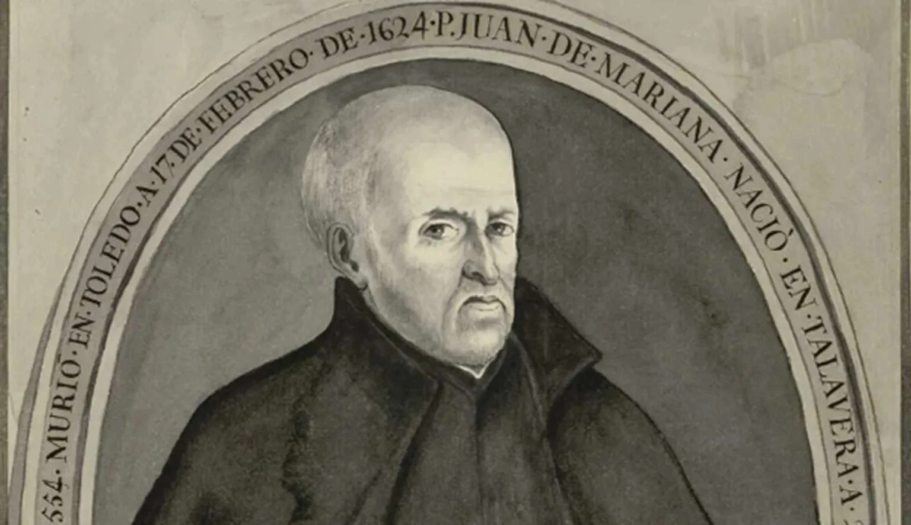

WASHINGTON EXAMINER ·
The Hispanic roots of the American Revolution
Read the original
This upcoming Fourth of July, our nation will celebrate the 243rd anniversary of the adaptation of the Declaration of Independence by the Second Continental Congress. This document, composed by Thomas Jefferson, paved the way for American independence from Great Britain and the eventual ratification of the United States Constitution.
And yet, not even independence could separate the newly formed United States from its profoundly British political and intellectual roots. It is, after all, no secret that the minds of the Founding Fathers and the documents which they penned were acutely influenced by the British Enlightenment and the works of authors such as Thomas Hobbes and John Locke. The Declaration of Independence’s call for the defense of the individual’s right to “life, liberty, and the pursuit of happiness,” for example, directly mirrors Locke’s Two Treatises of Government.
Similarly, it is said that the Constitution and the Bill of Rights can be traced directly back to Magna Carta, the charter issued in 1215 that is widely considered to be the first written constitution in European history.
But this is not the whole truth.
While Anglo-centric scholars are quick to focus on the contributions of 17th and 18th century British Enlightenment thinkers, the Late Hispanic Scholastics of 16th century Spain – particularly those of the School of Salamanca – had an undeniable influence on the minds of the Founding Fathers. It is no accident that John Adams, Thomas Jefferson, and James Madison all owned works by Spanish Jesuit Juan de Mariana. This is especially noteworthy as Mariana’s De Rege et Regis Institutione made a case for regicide in the face of tyranny.
In his latest book, Angel Fernández Álvarez demonstrates the striking similarities between the work of Mariana and Locke. In Mariana’s De Rege et Regis Institutione (1599) and Locke’s Two Treatises on Government (1689), both authors agree that civil society precedes the state and that governments are established to protect man’s natural rights. The similarities in their conclusions become undeniable, however, when one compares their views on taxes. While Mariana writes that “the king cannot impose new taxes without first having the consent of the governed,” Locke writes that the state “must not raise taxes on the property of the people, without the consent of the people.”
Similarly, proof of the Founders’ familiarity with Mariana’s work can be found in their private book collections and in letters such as this one from John Adams to John Taylor.
And the Hispanic roots of the American Revolution run deeper still. For scholars to claim that Magna Carta was Europe’s first document of its kind is to omit what had occurred 200 years earlier in the Spanish Kingdom of Leon. It was there, in 1017, that King Alphonso V, having convened his Curia Regis, issued the Fuero of León – a document which provided legal separation of church and state, protection of individual rights, private property, and judicial safeguards for citizens of the realm.
In a word, it provided a codified civil law for the kingdom at large. More importantly still, in 1188, nearly 30 years before Magna Carta, the first example of modern parliamentary representation was born when King Alfonso XI convened delegates of the nobility, the Church, and elected-representatives from across the Kingdom, and issued the Decrees of Leon, thus creating a decision-making body which limited the power of the Monarch in favor of the legislative Cortes.
Ultimately, the Hispanic contribution to the construction and evolution of our country cannot be understated. Even the free-market system that has allowed our nation to flourish was credited by Friedrich Hayek to the “Spanish Schoolmen” and not to Scotland’s Adam Smith. As the late Leonard Liggio once noted, thanks to the contributions of schoolmen such as Francisco de Vitoria, Francisco Suarez, and Luis de Leon, “modern economics, human rights, and international law were founded in the Iberian universities of the 16th and 17th centuries.”
This Independence Day, it might be worth remembering that our City upon a Hill is built with British bricks upon a profoundly Hispanic foundation.